Taller práctico · 2 horas
IA para Comisarías de Familia
Del uso informal al copiloto institucional seguro
- Para equipos jurídicos, psicosociales y administrativos
- El funcionario competente siempre tiene la última palabra
- Del uso libre al entorno institucional seguro
Usa las flechas, desliza o abre el índice para navegar
Bloque 1 · Diagnóstico
La realidad actual en los despachos
La IA ya está aquí, pero sin gobernanza
- Copiar y pegar datos en herramientas web gratuitas expone información reservada
- La necesidad diaria de resolver rápido supera el control institucional
- El reto no es prohibir, sino gobernar el uso de la tecnología
Bloque 1 · Diagnóstico
Cadena de valor de una Comisaría
¿Dónde aporta valor real la tecnología?
- Radicación: clasificación automática de casos urgentes
- Audiencia y acta: transcripción y estructuración de borradores
- Seguimiento: control inteligente de términos procesales
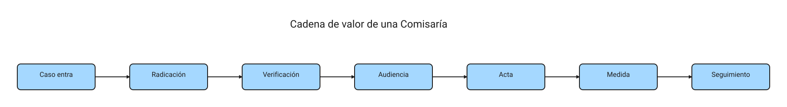
Bloque 1 · Diagnóstico
Los dolores diarios del despacho
El cuello de botella no es solo decidir, es procesar
- Formatos fragmentados y falta de sistemas de información unificados
- Coexistencia del expediente digital y las carpetas físicas
- Audiencias virtuales con transcripciones deficientes o manuales
Bloque 2 · Desmitificación
La puerta informal y sus riesgos
El costo oculto de las herramientas gratuitas
- Fuga de datos sensibles: nombres de menores, relatos de violencia, direcciones
- Incumplimiento de la cadena de custodia y la reserva del expediente electrónico
- Responsabilidad disciplinaria por tratamiento indebido de datos de menores
Bloque 2 · Desmitificación
¿Qué es la IA generativa?
Explicación fácil para no técnicos
- No tiene conciencia ni razona como un humano; predice la siguiente palabra
- La calidad del borrador depende 100% de la claridad de las instrucciones
- Requiere siempre un humano que revise, corrija y valide la salida
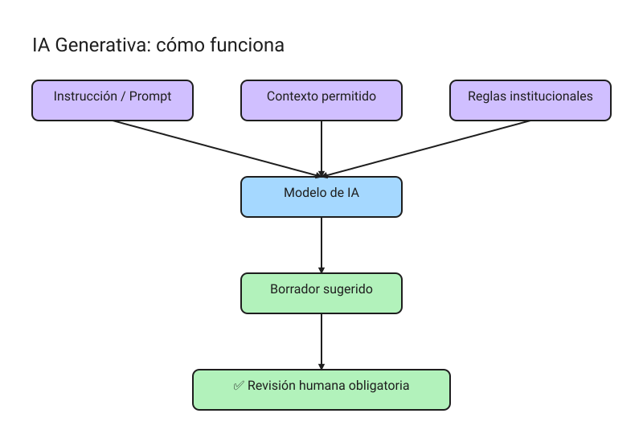
Bloque 2 · Desmitificación
Qué NO hace la IA
Desmintiendo la intrusión mágica
- No puede “buscar” en los expedientes físicos de tu comisaría
- No accede por sí sola a las bases de datos de la Fiscalía o el ICBF
- Si nadie la conecta de forma segura, opera en el vacío
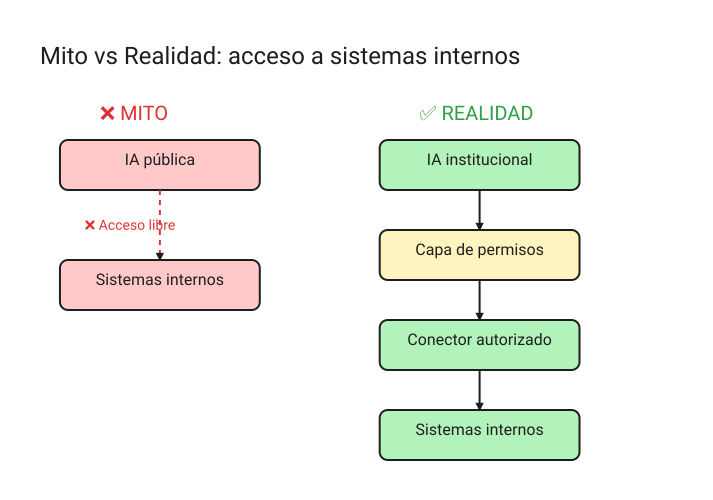
Bloque 2 · Desmitificación
Mitos y realidades de la IA en la justicia
Líneas rojas de la Sentencia T-323 de 2024
- Mito: “la IA dictará las medidas de protección y sentencias”
- Realidad: “la IA apoya en estructurar plantillas y redactar borradores”
- Línea roja: el funcionario valora las pruebas y decide autónomamente
Bloque 3 · Evolución de la herramienta
Chatbot genérico vs. Copiloto institucional
La diferencia entre jugar y trabajar en serio
- Chatbot: sin memoria autorizada, usa datos públicos, no es auditable
- Copiloto: accede a tus formatos oficiales, protege datos, registra auditoría
- La directriz MinTIC de 2026 exige entornos seguros y gobernanza contractual
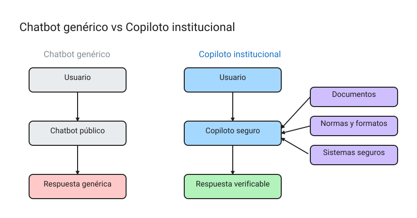
Bloque 3 · Evolución de la herramienta
Del usuario al constructor
El futuro de la innovación en las comisarías
- Ya no es necesario saber programar para crear una miniapp o un flujo de trabajo
- La habilidad clave es traducir el conocimiento institucional en reglas para la IA
- Cada comisaría podrá configurar copilotos adaptados a sus formatos locales
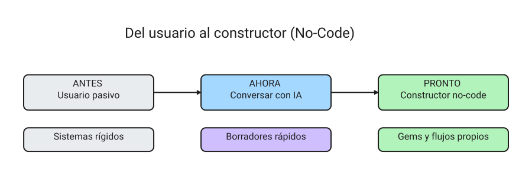
Bloque 3 · Evolución de la herramienta
¿Qué es un agente de IA?
La anatomía del copiloto estructurado
- Rol: la identidad asignada (ej.: asistente de actas)
- Reglas: salvaguardas y prohibiciones estrictas (ej.: no alucinar normas)
- Herramientas: conectores para consultar normogramas o calendarios
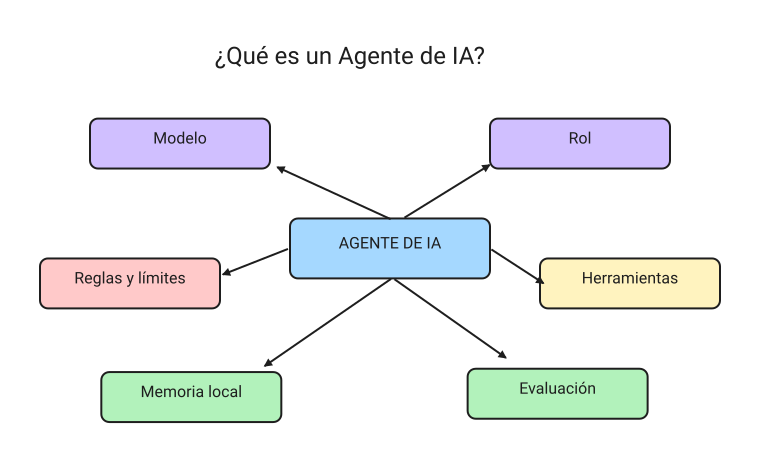
Bloque 3 · Evolución de la herramienta
Cómo mejorar un agente sin programar
El poder de los Skills y las Rules
- Skills: guías paso a paso que describen el procedimiento correcto
- Rules: normas ético-legales y límites del debido proceso
- Memoria: normativas colombianas y formatos autorizados
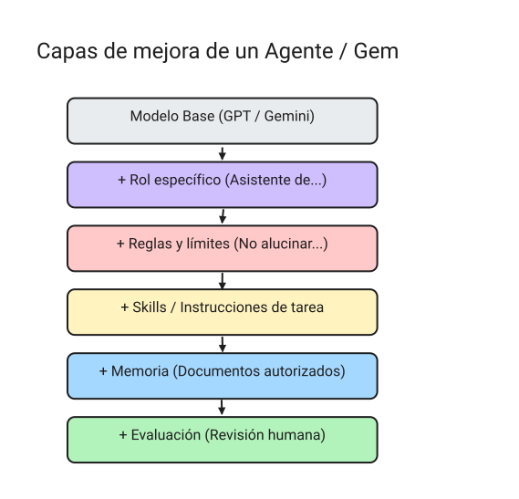
Bloque 4 · Seguridad y sistemas
El agente de actas de audiencia
De audio desordenado a documento estructurado
- Entrada: transcripción textual informal de la audiencia
- Proceso: el agente extrae asistentes, acuerdos y compromisos
- Salida: borrador listo para revisión y firmas del comisario
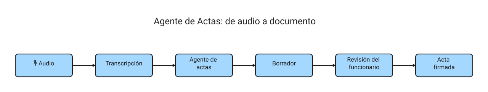
Bloque 4 · Seguridad y sistemas
El agente de términos procesales
Semaforización inteligente para prevenir vencimientos
- Lectura automática de fechas de radicación y tipo de solicitud
- Clasificación: verde (a tiempo), amarillo (vence pronto), rojo (crítico)
- Evita vencimientos de términos y promueve la justicia oportuna
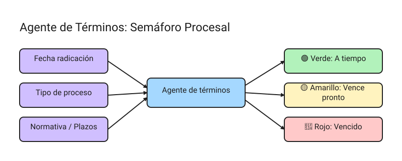
Bloque 4 · Seguridad y sistemas
Sistemas internos y conectores seguros
La arquitectura para datos reales
- El funcionario se conecta solo mediante su usuario institucional con permisos
- Los datos nunca se envían al internet abierto para entrenar modelos externos
- Registro de logs: quién, cuándo y para qué consultó el sistema
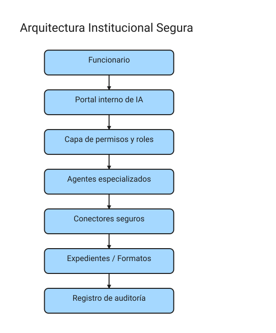
Bloque 4 · Seguridad y sistemas
MCP: conectando la IA con las herramientas
El protocolo como puente estándar de información
- Evita crear conectores personalizados complejos para cada sistema
- Centraliza el acceso seguro bajo las reglas de la entidad
- Permite consultar expedientes y minutas sin romper la seguridad
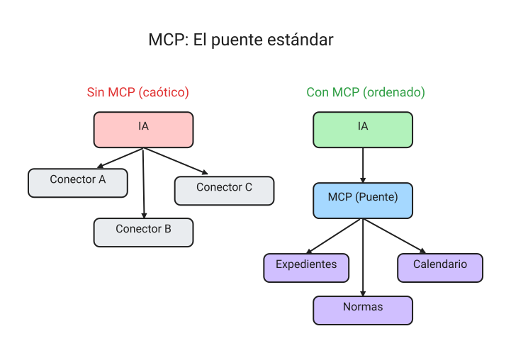
Bloque 4 · Seguridad y sistemas
Clasificación de datos en Comisarías
Ley 1581 y el tratamiento de información sensible
- Pública: leyes, normativas y formatos modelo vacíos (uso libre)
- Interna: documentos de gestión sin nombres reales (uso con cautela)
- Sensible: datos de menores, víctimas y violencia (prohibido en IA públicas)
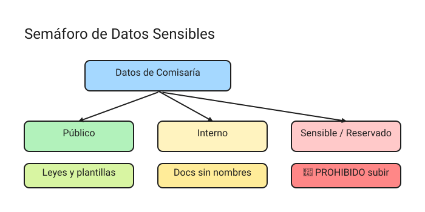
Bloque 4 · Seguridad y sistemas
Qué NO subir a la nube pública
La Lista Roja de Seguridad
- Nombres reales, cédulas, teléfonos y correos de las partes
- Direcciones exactas de residencias, lugares de trabajo o colegios
- Grabaciones de audio reales de audiencias o testimonios de víctimas y menores
Bloque 5 · Laboratorio
La anatomía del prompt jurídico seguro
Cómo escribir instrucciones sin riesgos
- Rol: “actúa como asistente de apoyo documental…”
- Límites: “no inventes hechos, limítate a las fuentes suministradas…”
- Verificación: incluir siempre la advertencia de revisión humana
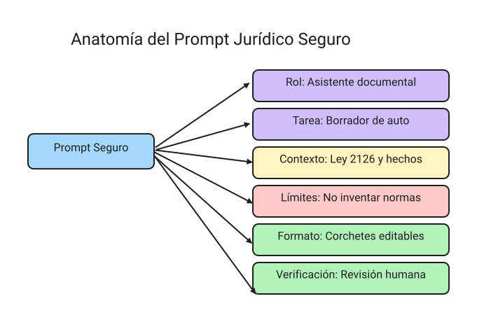
Bloque 5 · Demo 1
Anonimización de un caso ficticio
Aprender a limpiar los datos antes de procesar
- Insumo: relato ficticio con nombres, cédula inventada y dirección
- Acción: uso del prompt de anonimización estructurado
- Resultado: texto libre de identificadores, procesable de forma segura
Bloque 5 · Demo 2
Transcripción de audiencia a acta
Borradores eficientes bajo control humano
- Insumo: diálogo conversacional desordenado sobre visitas y alimentos
- Proceso: extracción estructurada de compromisos y plazos
- Resultado: acta de conciliación con la cláusula obligatoria de revisión
Bloque 5 · Demo 3
Semaforización de plazos procesales
Control de términos sin delegar decisiones
- Entrada: 4 radicaciones ficticias con tipos de trámite y fechas variadas
- Acción: cálculo de plazos y días restantes
- Salida: matriz de priorización visual ordenada por semáforo
Bloque 5 · Demo 4
El prompt jurídico seguro en acción
Comparación: mal prompt vs. prompt seguro
- Mal prompt: “hazme un auto rápido” → alucinaciones y normas obsoletas
- Prompt seguro: delimita fuentes, prohíbe inventar datos, exige corchetes
- La transparencia exige detallar qué prompts se usaron (Acuerdo PCSJA24-12243)
Bloque 6 · Hoja de ruta
Madurez institucional
El camino hacia la adopción gradual y segura
- Nivel 1 (30 días): prompts personales seguros y guías internas
- Nivel 2 (90 días): biblioteca de prompts aprobados y formatos estandarizados
- Nivel 3 (180 días): copilotos internos cerrados sobre normativas públicas
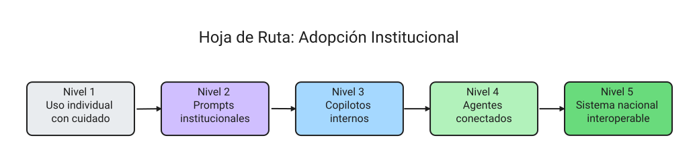
Bloque 6 · Cierre
Compromisos del taller
El funcionario competente siempre lidera el despacho
- La IA produce borradores editables; la legitimidad jurídica es del humano
- No se empieza por una plataforma perfecta; se empieza por ordenar tareas y riesgos
- Formación continua en herramientas públicas (cursos MinTIC y Escuela Judicial)
Gracias · Borrador sujeto a revisión del funcionario competente